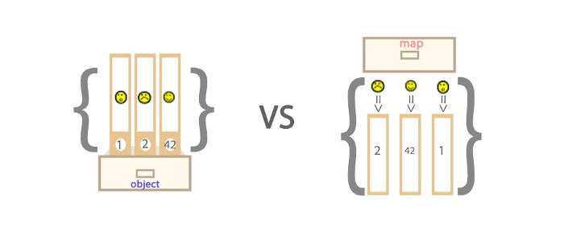

Map オブジェクト
Map オブジェクトはキーと値のペアを保存します。任意の値（オブジェクトまたはプリミティブ値）をキーまたは値として使用できます。
Maps と Objects の違い
- Object のキーは文字列または Symbols のみですが、Map のキーは任意の値にできます。
- Map のキーと値は順序付けられています（FIFO の原則）が、オブジェクトに追加されたキーは順序付けられていません。
- Map のキーと値のペアの数は size プロパティから取得できますが、Object のキーと値のペアの数は手動で計算するしかありません。
- Object はそれぞれ独自のプロトタイプを持ち、プロトタイプチェーン上のキー名が自分でオブジェクトに設定したキー名と衝突する可能性があります。

Map の key
key が文字列の場合
var myMap = new Map();
var keyString = "a string";
myMap.set(keyString, "キー 'a string' に関連付けられた値");
myMap.get(keyString); //"キー 'a string' に関連付けられた値"
myMap.get("a string"); //"キー 'a string' に関連付けられた値"
//keyString === 'a string' であるため
key がオブジェクトの場合
var myMap = new Map();
var keyObj = {},
myMap.set(keyObj, "キー keyObj に関連付けられた値");
myMap.get(keyObj); //"キー keyObj に関連付けられた値"
myMap.get({}); //undefined。keyObj !== {} であるため
key が関数の場合
var myMap = new Map();
var keyFunc = function () {}, //関数
myMap.set(keyFunc, "キー keyFunc に関連付けられた値");
myMap.get(keyFunc); //"キー keyFunc に関連付けられた値"
myMap.get(function() {}) //undefined。keyFunc !== function () {} であるため
key が NaN の場合
var myMap = new Map();
myMap.set(NaN, "not a number");
myMap.get(NaN); // "not a number"
var otherNaN = Number("foo");
myMap.get(otherNaN); // "not a number"
NaN は任意の値、さらには自分自身とも等しくありませんが（NaN !== NaN は true を返します）、NaN は Map のキーとしては区別されません。
Map の反復
Map を走査するには、以下の2つが最も高レベルです。
for...of
var myMap = new Map();
myMap.set(0, "zero");
myMap.set(1, "one");
//2つのログが表示されます。1つは "0 = zero"、もう1つは "1 = one" です。
for (var [key, value] of myMap) {
console.log(key + " = " + value);
}
for (var [key, value] of myMap.entries()) {
console.log(key + " = " + value);
}
/*この entries メソッドは、挿入順に Map オブジェクト内の各要素の [key, value] 配列を含む新しい Iterator オブジェクトを返します。*/
//2つのログが表示されます。1つは "0"、もう1つは "1" です。
for (var key of myMap.keys()) {
console.log(key);
}
/*この keys メソッドは、挿入順に Map オブジェクト内の各要素のキーを含む新しい Iterator オブジェクトを返します。*/
//2つのログが表示されます。1つは "zero"、もう1つは "one" です。
for (var value of myMap.values()) {
console.log(value);
}
/*この values メソッドは、挿入順に Map オブジェクト内の各要素の値を含む新しい Iterator オブジェクトを返します。*/
forEach()
var myMap = new Map();
myMap.set(0, "zero");
myMap.set(1, "one");
//2つのログが表示されます。1つは "0 = zero"、もう1つは "1 = one" です。
myMap.forEach(function(value, key) {
console.log(key + " = " + value);
}, myMap)
Map オブジェクトの操作
Map と Array の変換
var kvArray = [["key1", "value1"], ["key2", "value2"]];
//Map コンストラクタは、2次元のキーと値のペア配列を Map オブジェクトに変換できます。
var myMap = new Map(kvArray);
//Array.from 関数を使用すると、Map オブジェクトを2次元のキーと値のペア配列に変換できます。
var outArray = Array.from(myMap);
Map のクローン
var myMap1 = new Map([["key1", "value1"], ["key2", "value2"]]);
var myMap2 = new Map(myMap1);
console.log(original === clone);
//false が出力されます。Map オブジェクトのコンストラクタがインスタンスを生成し、反復して新しいオブジェクトを作り出します。
Map のマージ
var first = new Map([[1, 'one'], [2, 'two'], [3, 'three'],]);
var second = new Map([[1, 'uno'], [2, 'dos']]);
//2つの Map オブジェクトをマージするとき、重複するキーがある場合は後者が前者を上書きします。対応する値は uno、dos、three です。
var merged = new Map([...first, ...second]);
Set オブジェクト
Set オブジェクトは、プリミティブ値であれオブジェクト参照であれ、任意の型の一意な値を格納できます。
Set の特殊な値
Set オブジェクトに格納される値は常に一意であるため、2つの値が厳密に等しいかどうかを判断する必要があります。いくつかの特殊な値は特別に扱う必要があります：
- +0 と -0 は、格納時の一意性の判断において厳密に等しいため、重複しません；
- undefined と undefined は厳密に等しいため、重複しません；
- NaN と NaN は厳密には等しくありませんが、Set には1つしか格納できず、重複しません。
コード
let mySet = new Set();
mySet.add(1); // Set(1) {1}
mySet.add(5); // Set(2) {1, 5}
mySet.add(5); //Set(2) {1, 5} ここでは値の一意性が示されています
mySet.add("some text");
//Set(3) {1, 5, "some text"} ここでは型の多様性が示されています
var o = {a: 1, b: 2};
mySet.add(o);
mySet.add({a: 1, b: 2});
// Set(5) {1, 5, "some text", {…}, {…}}
//ここでは、オブジェクト間で参照が異なり厳密には等しくない場合でも、値が同じであれば Set に格納できることが示されています
型変換
Array
//Array を Set に変換
var mySet = new Set(["value1", "value2", "value3"]);
//... 演算子を使用して、Set を Array に変換
var myArray = [...mySet];
String
//String を Set に変換
var mySet = new Set('hello'); // Set(4) {"h", "e", "l", "o"}
//注：Set の toString メソッドは Set を String に変換できません
Set オブジェクトの用途
配列の重複除去
var mySet = new Set([1, 2, 3, 4, 4]);
[...mySet]; // [1, 2, 3, 4]
和集合
var a = new Set([1, 2, 3]);
var b = new Set([4, 3, 2]);
var union = new Set([...a, ...b]); // {1, 2, 3, 4}
積集合
var a = new Set([1, 2, 3]);
var b = new Set([4, 3, 2]);
var intersect = new Set([...a].filter(x => b.has(x))); // {2, 3}
差集合
var a = new Set([1, 2, 3]);
var b = new Set([4, 3, 2]);
var difference = new Set([...a].filter(x => !b.has(x))); // {1}